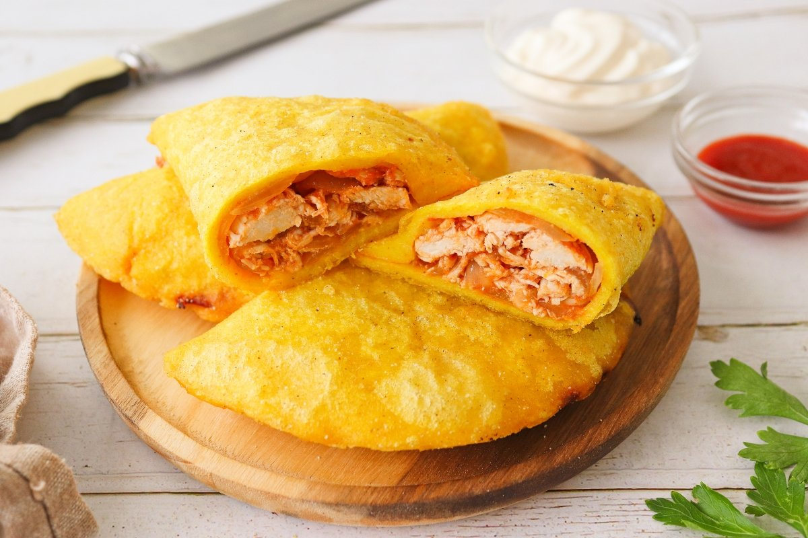

Venezuelan empanada

Description
Empanadas of different types are among the most popular dishes in Venezuela,
where they are eaten especially for breakfast, accompanied by spicy sauces
and mayonnaise. They are usually eaten at street stalls on the way to work
and are very present in markets, where there is always room for an arepas
or empanadas stand.
Ingredients:
- 800 g chicken breasts
- 10 black peppercorns
- 2 leeks
- Salt
- 30 ml olive oil
- 1 onion
- 3 garlic cloves
- 200 g crushed tomato
- 1 teaspon hot paprika
- Freshly ground black pepper
- 250 g precooked corn flour
- 1/2 teaspon salt
- 1/2 teaspon turmeric
- 400 ml of warm water
Steps:
- To make the empanadas we start by making the filling. To do this, we put 800 g
of chicken breasts in a pot, which will be more or less 2 breasts, 10 grains
of black pepper, 2 clean and chopped leeks, and salt. We cover the breasts with
water. Heat the pot and cook the breasts for 25 minutes over medium-high heat.
- We remove the breasts from the pot and let them cool. We reserve the cooking
broth to use part of it later.
- We shred the breasts into thin strips and set them aside.
- In a frying pan, put 30 ml of olive oil, 1 onion cut into julienne strips and 3
cloves of garlic cut into slices, and cook over medium heat for about 10 minutes.
- When the vegetables are poached, add 200 g of crushed tomato, 1 teaspoon of hot paprika
and freshly ground black pepper. Cook the whole thing over low heat until the tomato is
reduced and there is no liquid left.
- Add the shredded chicken and 1 ladle of the breast cooking broth. We mix and cook the
filling for a couple of minutes until all the ingredients are well integrated. We reserve.
- Integrate all the flavors and wait for the sauce to reduce a little.
- Add a cup of water and wait for it to evaporate. Remove from heat and reserve.
- To make the empanada dough, put 250 g of pre-cooked corn flour, half a teaspoon of salt,
half a teaspoon of turmeric in a large bowl and pour 400 ml of warm water.
- We mix these ingredients until we form a homogeneous mass.
- So that the dough does not stick to the work surface, we sprinkle it lightly with corn flour.
We stretch portions of about 80 g of dough until we form a circle. We put a large spoonful
of filling in the center of each portion.
- We close the empanadas and, with the help of a bowl, press the edges and seal them.
If necessary, we can also use a fork to ensure that the empanadas are well sealed.
- Fry the empanadas in batches in plenty of oil until they are lightly golden and crispy.
- We serve the Venezuelan chicken empanadas accompanied with a sauce of our choice,
such as mayonnaise or a spicy sauce.